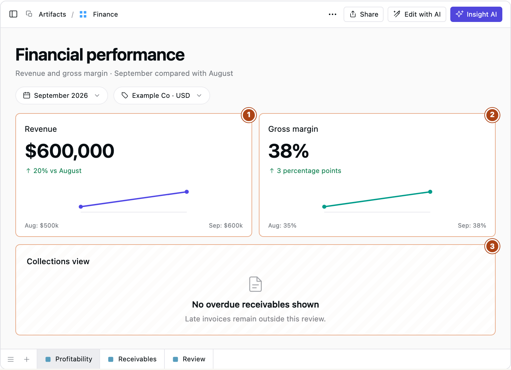
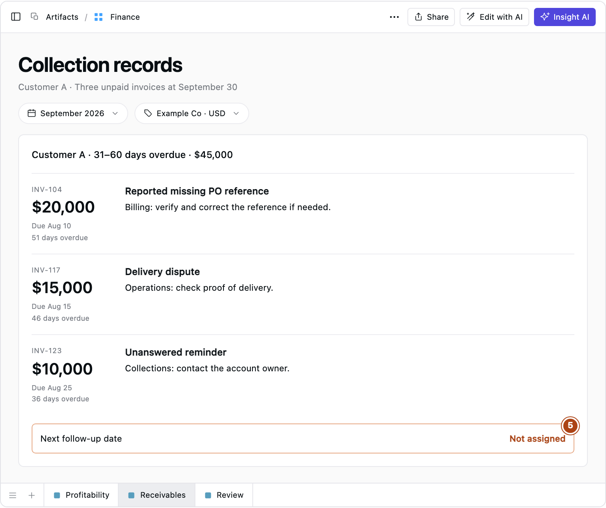
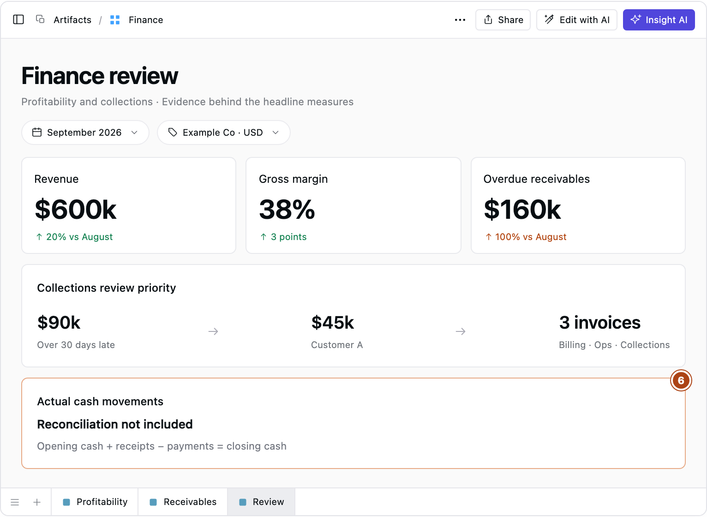

Sales are up. So why is cash getting tight?
Three financial dashboard examples, and the invoice records that explain what the green KPIs miss.
Sales are up and gross margin looks better, yet the finance team is still chasing payments. You can see why a founder would be puzzled. The dashboard says the business had a good month; the people collecting the money have a different problem to deal with.
Revenue tells you what the business earned. Receivables show what customers still owe, and receipts tell you what they've paid. Under accrual accounting, a sale can appear in revenue before payment arrives. The SEC's guide to financial statements explains the difference between profitability and cash generation.
These examples follow a fictional business through that problem. All amounts are illustrative USD figures, and the dashboards use a Supaboard-style interface. The numbered markers show where each view leaves a question unanswered.
What the first dashboard can tell you
Revenue rose from $500,000 in August to $600,000 in September. Gross margin improved from 35% to 38%. Those figures give the commercial team something worth investigating: which products or customers drove the improvement?

- The revenue card shows sales growth. It doesn't tell you how much customers paid.
- The margin card shows better profitability, but says nothing about when payments arrived.
- The missing collections view means overdue invoices never enter this review.
A breakdown by product or customer could explain whether higher volume, pricing, discounts or a change in sales mix improved the results. Revenue and cost-of-sales entries would help the team decide whether to change prices.
That's useful work. If you're trying to understand why invoices aren't getting paid, though, you need to open the receivables records.
Where the unpaid money sits
September ends with $160,000 overdue, up from $80,000 in August. The total has doubled, but the age breakdown gives you a better place to start looking: balances more than 30 days late have risen from $30,000 to $90,000.

- The aging chart shows which balances are getting older. To find out why, you still need the customer and invoice records behind those bars.
Fictional month-end balances. Bars use the same scale and start at zero. Invoices not yet due are excluded.
An accounts receivable aging report groups unpaid balances by age. In this example, that means days past the contractual due date. ACCA's guidance on receivables describes how aged analysis identifies balances that have breached credit terms.
Customer A accounts for $45,000 of the $55,000 in the band for invoices 31 to 60 days overdue. That gives the finance team a much narrower question: what's holding up this customer's payments?

- The notes suggest work for billing, operations and collections. Nobody has assigned the next follow-up date yet.
Illustrative unpaid invoices at September 30. Their due dates place them in the band for balances 31 to 60 days overdue.
The $20,000 invoice has a reported purchase-order reference problem. Billing needs to check it. The $15,000 invoice is disputed, so operations needs to look at the delivery evidence. Collections can contact the account owner about the remaining $10,000 and its unanswered reminder.
Sending the same payment reminder for all three would leave the reference problem and delivery dispute unresolved. The notes explain why different people need to act, although a department name alone is not enough: assign a specific owner and a review date.
Keep receipts, credits and dated notes with the invoice records so reviewers can check changes in the balance. A customer's promise to pay belongs in the notes until the money arrives.
Collections still won't explain the whole cash position
Putting overdue receivables beside revenue and margin lets the team discuss the sales improvement without losing sight of the unpaid invoices.

- This view still needs a separate reconciliation of actual cash receipts and payments. Payroll, inventory purchases, supplier payments and debt repayments also affect the bank balance. It is not a cash forecast.
Even a fall in overdue receivables needs checking. Credit notes and write-offs reduce the balance without bringing in money. If someone asks what changed in the bank account, the receivables total won't answer that on its own.
Give each number a job in the review
You can apply the same test to the other financial KPIs on your dashboard. Write down the question each one is there to answer, the comparison you'll use and the records you'll need:
- Where did revenue growth come from? Compare equivalent periods and inspect customer and product revenue before changing sales priorities.
- What changed gross margin? Use the same cost definition across periods. Check discounts, sales mix and cost-of-sales entries before adjusting prices or costs.
- What's blocking overdue payments? Compare snapshots by age band, then use invoices, receipts, credits and collection notes to assign the work.
- What drove the cash balance change? Reconcile opening cash and actual inflows and outflows to closing cash before reviewing spending or payment timing.
- Why did expenses differ from budget? Inspect ledger entries, suppliers and accruals before deciding which costs to correct, defer or approve.
Dates need care here. Revenue covers a period, while receivables describe a position at a particular date. A September receivables view must include older unpaid invoices. Put the entity, currency, reporting date and last refresh where the reviewer can see them.
Start the meeting by checking that scope. Discuss the material changes, open the records behind them, and finish with owners and review dates for the actions you've agreed.
Running the review in Supaboard
In Supaboard, the investigation can start with a question:
Which customers account for balances more than 30 days overdue, and which invoices make up those balances?
Once invoice and payment records are available through data connections, use Supaboard Dashboards to filter by customer and open the underlying records. Follow-up questions and collection notes help reviewers check what's holding up payment.
Before your next finance review, map each metric on your dashboard to one review question. Then try to reach the records you'd need to answer it. That's where a missing view, an unlinked collection note or an unassigned action becomes apparent.
Which green KPI on your dashboard leaves a question unanswered? Share the metric and the question in the comments.